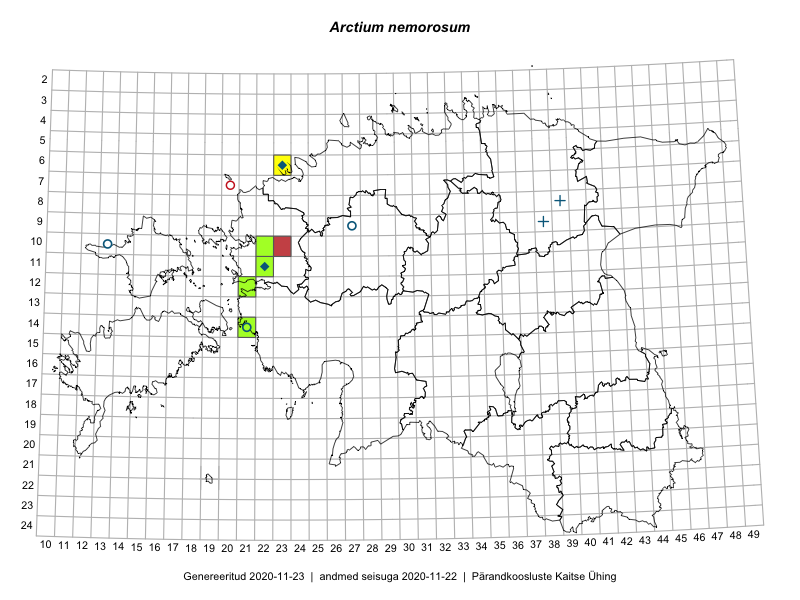

Arctium nemorosum — salutakjas
Asteraceae :: Arctium nemorosum Lej. (30)

Kaart põhineb 31 kirjel:
vaatlusi 8
herbaareksemplare 22
LVA kirjeid1 1
Taime kaasaegsed ja ajaloolised leiukohad asuvad 8 ruudus.
Tingmärgid ja leidudega ruutude arvud periooditi uues (u) ja 2005 andmestikus (v)
| █ | vahemik | u2 | v3 |
|---|---|---|---|
| █ | 2006–2020 | 6 | – |
| ◆/◇ | 1971–2005 | 1 | 2 |
| ○ | 1921–1970 | 3 | 4 |
| + | kuni 1920 | 0 | 0 |
| × | hävinud | – | 0 |
| ? | kaheldav | – | 0 |
| Ruut | Leidja(d) | Leiuaeg | Kirje |
|---|---|---|---|
| 14-21 | Ott Luuk, Toomas Kukk | 2020-07-16 | punkt: Arctium nemorosum Lej. |
| 11-22 | Toomas Kukk, Peedu Saar | 2019-09-19 | TAA0148469: Arctium nemorosum Lej. |
| 06-23 | Toomas Kukk | 2017-07-27 | punkt: Arctium nemorosum Lej. |
| 12-21 | Tiit Hallikma, Toomas Kukk | 2015-08-27 | ruut/ala: Arctium nemorosum Lej. |
| 12-21 | Toomas Kukk, Tiit Hallikma | 2015-08-25 | TAA0134925: Arctium nemorosum Lej. |
| 12-21 | Toomas Kukk, Tiit Hallikma | 2015-08-25 | TAA0134926: Arctium nemorosum Lej. |
| 12-21 | Tiit Hallikma, Toomas Kukk | 2015-08-25 | punkt: Arctium nemorosum Lej. |
| 10-23 | Anneli Palo | 2015-07-21 | LVA: 2088867466 |
| 11-22 | Toomas Kukk | 2014-08-21 | TAA0113301: Arctium nemorosum Lej. |
| 11-22 | Toomas Kukk | 2014-08-21 | TAA0113302: Arctium nemorosum Lej. |
| 11-22 | Thea Kull, Toomas Kukk | 2014-08-21 | punkt: Arctium nemorosum Lej. |
| 10-22 | Thea Kull, Toomas Kukk | 2014-08-21 | punkt: Arctium nemorosum Lej. |
| 10-22 | Toomas Kukk | 2014-08-16 | TAA0113376: Arctium nemorosum Lej. |
| 10-22 | Toomas Kukk | 2014-08-16 | TAA0113377: Arctium nemorosum Lej. |
| 10-22 | Toomas Kukk | 2014-08-16 | TAA0113378: Arctium nemorosum Lej. |
| 10-22 | Toomas Kukk | 2014-08-16 | TAA0113379: Arctium nemorosum Lej. |
| 14-21 | Toomas Kukk | 2008-08-17 | TAA0078329: Arctium nemorosum Lej. |
| 14-21 | Toomas Kukk | 2008-08-17 | TAA0078330: Arctium nemorosum Lej. |
| 14-21 | Toomas Kukk | 2008-08-17 | TAA0078331: Arctium nemorosum Lej. |
| 14-21 | Toomas Kukk | 2008-08-17 | TAA0078332: Arctium nemorosum Lej. |
| 14-21 | Toomas Kukk | 2008-07-03 | ruut/ala: Arctium nemorosum Lej. |
| 06-23 | Toomas Kukk | 1997-08-06 | TAA0005196: Arctium nemorosum Lej. |
| 06-23 | Tõnu Ploompuu | 1994-05-18 | TAA0005194: Arctium nemorosum Lej. |
| 06-23 | Tõnu Ploompuu | 1992–1999 | ruut/ala: Arctium nemorosum Lej. |
| 14-21 | L. Tehver | 1949-08-25 | TAA0005195: Arctium nemorosum Lej. |
| 09-27 | H. Aasamaa | 1935-08-29 | TU250908: Arctium nemorosum Lej. |
| 09-27 | H. Aasamaa | 1935-08-29 | TU250909: Arctium nemorosum Lej. |
| 09-27 | H. Aasamaa | 1935-08-29 | TU250910: Arctium nemorosum Lej. |
| 09-27 | H. Aasamaa | 1935-08-29 | TU267538: Arctium nemorosum Lej. |
| 09-27 | H. Aasamaa | 1935-08-29 | TU267539: Arctium nemorosum Lej. |
| 10-13 | Gustav Vilbaste | 1931-08-12 | TAA0005197: Arctium nemorosum Lej. |
Loodusvaatluste andmebaas. https://lva.eelis.ee, väljavõte seisuga 19.10.2020↩︎
Ruutude arv uue atlase andmekogu järgi. Muuhulgas arvestab vanemat herbaariumi, 2005. aasta atlase välitöölehtedelt uuesti digitaliseeritud andmeid jne. Uue atlase andmekogust pärinevad andmed on kaardile kantud siniste sümbolitega.↩︎
Ruutude arv 2005. aasta atlase (Kukk, T., Kull, T., Eesti taimede levikuatlas. Eesti Maaülikool, Põllumajandus- ja Keskkonnainstituut, Tartu, 2005) järgi. Andmeallikana on kasutatud levik.exe programmi, kus igas ruudus on registreeritud vaid uusim leid. Seetõttu on vanemate perioodide kohta andmed puudulikud. Kasutatud levik.exe andmestikus leidub mõningaid kõrvalekaldeid atlase trükis ilmunud versioonist, sagedamini tarnade ja käpaliste seas. Lisaks leidub selles andmestikus valik liike (peamiselt väheste leidudega tulnuktaimed), mille kaarte trükis ei avaldatud. Vana atlase andmed ruutudest, milles ei ole uue atlase andmekogus leide enne 2006. aastat, on kaardil esitatud punaste sümbolitega. Vana atlase andmetel hävinud ja kaheldavaid leiukohti pole hilisemate (taas)leidude põhjal korrigeeritud.↩︎